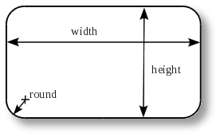
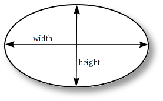
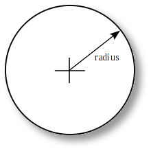
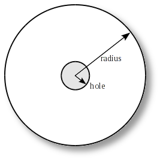
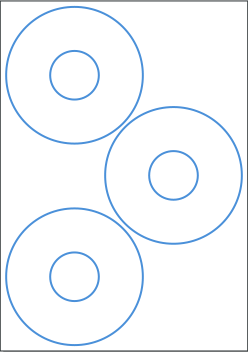
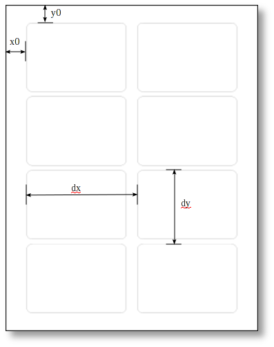

Manually Creating Product Templates
This page is a reference guide to manually creating gLabels templates. gLabels templates are defined in simple XML files as described in the DTD: glabels-4.0.dtd <https://github.com/j-evins/glabels-qt/blob/master/templates/glabels-4.0.dtd> (this DTD also describes other XML files used by gLabels).
Manually created template files should be placed in the ${HOME}/.glabels and be named with a .template extension.
Note
gLabels searches for templates in several other locations as defined here:
Location |
Description |
|---|---|
${prefix}/share/glabels-qt/templates |
Predefined templates distributed with gLabels. ${prefix} is usually /usr or /usr/local, depending on where gLabels was installed. |
${XDG_CONFIG_HOME}/.config/glabels.org/glabels-qt/ |
User defined templates created with the gLabels Template Designer. Do not put manually created templates in this directory. If ${XDG_CONFIG_HOME} is not defined, it defaults to ${HOME}/.config. |
${HOME}/.glabels |
User defined templates that have been created manually should be placed in this directory. Older versions of the Template Designer (prior to 3.0) would also put templates in this directory. |
For how to provide a template for inclusion in gLabels, see Create a new product template from scratch.
Assumptions/caveats
A sheet contains only one size of label or card (if a sheet contains more
than one size of item, it can be split into multiple templates for multiple pass printing)
Distances can be expressed in units of pt, in, mm, cm, or pc.
For example: “1.0in” or “2.54cm”. If no units are specified, computer points (pt) will be assumed (1 pt = 1/72 in = 0.352778 mm).
Template Files
A template file contains a single Glabels-templates top-level node.
<?xml version="1.0"?>
<Glabels-templates>
...templates...
</Glabels-templates>
Example Template
Example glabels template file containing a single Template node.
<?xml version="1.0"?>
<Glabels-templates>
<Template brand="Avery" part="8160" size="US-Letter" description="Mailing Labels">
<Meta category="label"/>
<Meta category="mail"/>
<Meta product_url="http://www.avery.com/avery/en_us/"/>
<Label-rectangle id="0" width="189pt" height="72pt" round="5pt">
<Markup-margin size="5pt"/>
<Layout nx="3" ny="10" x0="11.25pt" y0="36pt" dx="200pt" dy="72pt"/>
</Label-rectangle>
</Template>
</Glabels-templates>
Template Node
A Template node describes a single stationery product. It must contain one instance of any type of Label node (Label-rectangle, Label-round, or Label-cd).
Property |
Description |
|---|---|
brand |
Brand or manufacturer of stationery product. E.g. “Avery” |
part |
Part number or name of stationery product. E.g. “8160” |
size |
Size of sheet. E.g., “US-Letter”, “A4”, … |
description |
Description of stationery product. E.g, “Mailing Labels”. |
_description |
Translatable description of stationery product. E.g, “Mailing Labels”. (Only useful for predefined templates) |
width |
Page width. Only valid if size=”Other” |
height |
Page height. Only valid if size=”Other” |
equiv |
Equivalent part number. If this property is present, the template is a clone of another template of the same brand. The template will inherit all properties, except brand and name from the other template. This equiv property must refer to a previously defined template – gLabels does not currently support forward references. |
Meta Node
A Meta node contains some additional information about the template. A Template node may contain zero or more Meta nodes.
Subnode |
Description |
|---|---|
category |
A category for the template. A template can belong to multiple categories by simply adding multiple Meta nodes to the parent Template node. Template categories are used by the gLabels New Label Dialog to filter the results of template searches. The value of this category must match a predefined category ID defined in the file ${prefix}/libglabels-3.0/templates/categories.xml. Currently defined category IDs include:
|
product_url |
A URL pointing to the vendor’s webpage for the specific product, if available. |
Note
Suggestions for additional categories can be sent to the gLabels developer’s Mailing list <glabels-devel@lists.sourceforge.net>. Product URLs may be of limited use, because they may not be permanent.
Label-rectangle Node
A Label-rectangle node describes the dimensions of a single label or business card that is rectangular in shape (may have rounded edges).
Property |
Description |
|---|---|
id |
Reserved for future use. Should always be 0. |
width |
Width of label/card |
height |
Height of label/card |
round |
Radius of corners. For items with square edges (business cards), the radius should be 0. |
x_waste |
Amount of horizontal waste (over-print) to allow. This is useful for minimizing alignment problems when using non-white backgrounds (e.g. images). |
y_waste |
Amount of vertical waste (over-print) to allow. This is useful for minimizing alignment problems when using non-white backgrounds (e.g. images). |

Label-ellipse` Node
A Label-ellipse node describes the dimensions of a single label or business card that is elliptic in shape.
Property |
Description |
|---|---|
id |
Reserved for future use. Should always be 0. |
width |
Width of the ellipse |
height |
Height of the ellipse |
waste |
Amount of waste (over-print) to allow. This is useful for minimizing alignment problems when using non-white backgrounds (e.g. images). |

Label-round Node
A Label-round node describes the dimensions of a simple round label (not a CD).
Property |
Description |
|---|---|
id |
Reserved for future use. Should always be 0. |
radius |
Radius (1/2 diameter) of label |
waste |
Amount of waste (over-print) to allow. This is useful for minimizing alignment problems when using non-white backgrounds (e.g. images). |

Label-cd Node
A Label-cd node describes the dimensions of a CD, DVD, or business card CD.
Property |
Description |
|---|---|
id |
Reserved for future use. Should always be 0. |
radius |
Outer radius of label |
hole |
Radius of concentric hole |
width |
If present, the label is clipped to the given width. (Useful for “business card CDs”). |
height |
If present, the label is clipped to the given height. (Useful for “business card CDs”). |
waste |
Amount of waste (over-print) to allow. This is useful for minimizing alignment problems when using non-white backgrounds (e.g. images). |

Markup Nodes
Templates may contain optional markup nodes. These nodes are used to describe a simple set of markup lines that are visible in the glabels drawing canvas, but not visible when printed. These lines can represent margins, fold lines, center lines, special areas, or other helpful hints to the user of a template.
Markup-margin Node
A Markup-margin describes a margin along all edges of a label.
Property |
Description |
|---|---|
size |
Size of the margin. I.e. the distance of the margin line from the edge of the card/label. |
Markup-line Node
A Markup-line node describes a markup line.
Property |
Description |
|---|---|
x1 |
x coordinate of 1st endpoint of the line segment. |
y1 |
y coordinate of 1st endpoint of the line segment. |
x2 |
x coordinate of 2nd endpoint of the line segment. |
y2 |
y coordinate of 2nd endpoint of the line segment. |
Markup-circle Node
A Markup-circle describes a markup circle.
Property |
Description |
|---|---|
x0 |
x coordinate of circle origin (center). |
y0 |
y coordinate of circle origin (center). |
radius |
Radius of circle. |
Markup-rect Node
A Markup-rect describes a markup rectangle.
Property |
Description |
|---|---|
x1 |
x coordinate of upper left corner of rectangle. |
y1 |
y coordinate of upper left corner of rectangle. |
w |
Width of rectangle. |
h |
Height of rectangle. |
r |
Radius of rounded corners of rectangle. |
Markup-ellipse Node
A Markup-ellipse describes a markup ellipse.
Property |
Description |
|---|---|
x1 |
x coordinate of upper left corner of ellipse. |
y1 |
y coordinate of upper left corner of ellipse. |
w |
Width of ellipse. |
h |
Height of ellipse. |
Layout Node
A label node may contain multiple Layout children. If labels are arranged in a simple grid pattern, only one layout is needed. However, if labels are arranged in multiple grids, such as a running bond pattern, multiple Layout tags can be used.
A common example for multiple layouts is a sheet with three CD labels:

The two labels on the left edge can be assigned to a grid, assuming we can define the coordinates for the top left label and the distance to the second label properly. The distance to the left edge is common to these labels. The third one on the right edge has no common distance values with the other ones, that’s why we have to define a second layout, with unique coordinates for the top left corner of that label.
Note
You can define multiple layouts only if the labels on the sheet have the same shape. If your sheet contains different shapes, you have to define each shape in another template separately. Future versions of gLabels will probably be able to concatenate such sheets with different shapes within a single template.
Note
A single label can always be treated as a grid of one.
Property |
Description |
|---|---|
nx |
Number of labels/cards across in the grid (horizontal). |
ny |
Number of labels/cards across in the grid (vertical). |
x0 |
Distance from left edge of sheet to the left edge of the left column of cards/labels in the layout. |
y0 |
Distance from the top edge of sheet to the top edge of the top row of labels/cards in the layout. |
dx |
Horizontal pitch of grid. |
dy |
Vertical pitch of grid. |
